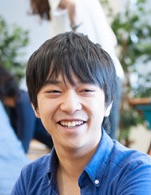

Masataka Yamaguchi
Email: yamaguchi[at]mi.t.u-tokyo.ac.jp
Education
2017 M.S. in Information Science and Technology (The University of Tokyo)
2015 B.S. in Engineering (The University of Tokyo)
Publications
[BMVC‘19]
One paper has been accepted to the 30th British Machine Vision Conference. Stay tuned.
[ICASSP‘19]
Masataka Yamaguchi
, Yuma Koizumi, Noboru Harada.
AdaFlow: Domain-Adaptive Density Estimator with Application to Anomaly Detection and Unpaired Cross-Domain Translation.
In the 44th International Conference on Acoustics, Speech, and Signal Processing, 2019.
[ICCV‘17]
Masataka Yamaguchi
, Kuniaki Saito, Yoshitaka Ushiku, Tatsuya Harada.
Spatio-temporal Person Retrieval via Natural Language Queries.
In the 16th International Conference on Computer Vision, 2017.
[ICCV‘15]
Yoshitaka Ushiku,
Masataka Yamaguchi
, Yusuke Mukuta, Tatsuya Harada.
Common Subspace for Model and Similarity: Phrase Learning for Sentence Generation from Images.
In the 15th International Conference on Computer Vision, 2015.
Misc.
[Award, ILSVRC’15]
3rd
place for still image object detection with additional data in Imagenet Large Scale Visual Recognition Challenge 2015.
[poster at ICCV‘15 Workshop]
[Invited Talk]
nVidia Deep Learning Day 2016, 2016/01/15.
[slide]
[Tool]
Paper title search
解説記事
画像／映像と言語の横断検索, 画像ラボ2019年2月号.
画像／映像と言語の横断検索, 映像情報メディア学会誌2018年9月号.
日経ビッグデータ2016年2月号.